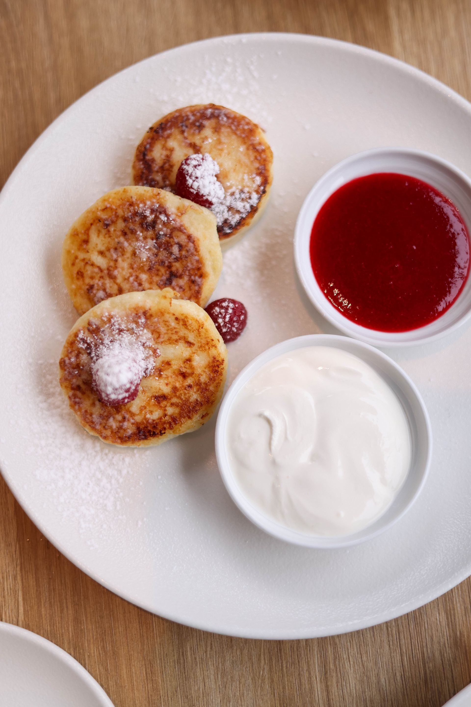

- Syrniki -

Image by Valeria Boltneva, on Pexels.
Description
Syrniki are Slavic cheese pancakes. They are a part of Latvian, Lithuanian, Russian, Belarusian and Ukrainian cuisines. They are cheesy, soft and a just little sweet. They are usually enjoyed as breakfast or as a light lunch, and are usually served with sour cream + some sort of fruit preserve.
Ingredients
- 450g farmer's cheese (has to be strained)
- 2 Eggs
- 62.5g + 62.5g All-purpose flour
- 50g Sugar
- 1.5g salt
- 60ml Vegetable oil (for frying)
Instructions
- In a large bowl, crumble the farmers cheese into little pieces with a fork (strain it more if it isn't crumbly)
- Add 2 eggs and mix well.
- Add 62.5g flour, as well as the sugar and the salt. Mix it well.
- Prepare a small bowl with about 62.5g of flour - you will use it to dredge the pancakes. Scoop out approximately 1/4 cup of pancake dough at a time, adding as much flour as needed to make the batter into soft dough.
- Gently flatten the dough into a small patty. Dredge the pancake with flour on both sides. Shake off excess flour.
- Heat the vegetable oil, and gently place the flour-dredged pancakes into the pan using a spatula. Cook on medium-low heat for about 4-5 minutes per side, or until each side is golden brown.
- To serve, sprinkle with powdered sugar, or drizzle with maple syrup, honey, whipped cream or sour cream + your favorite fruit preserves